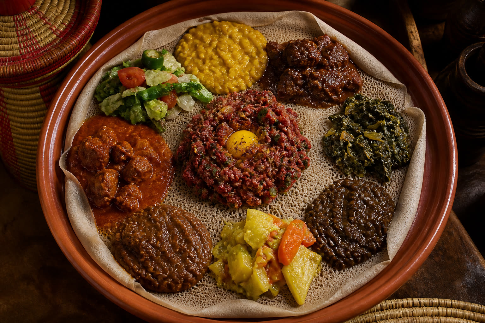
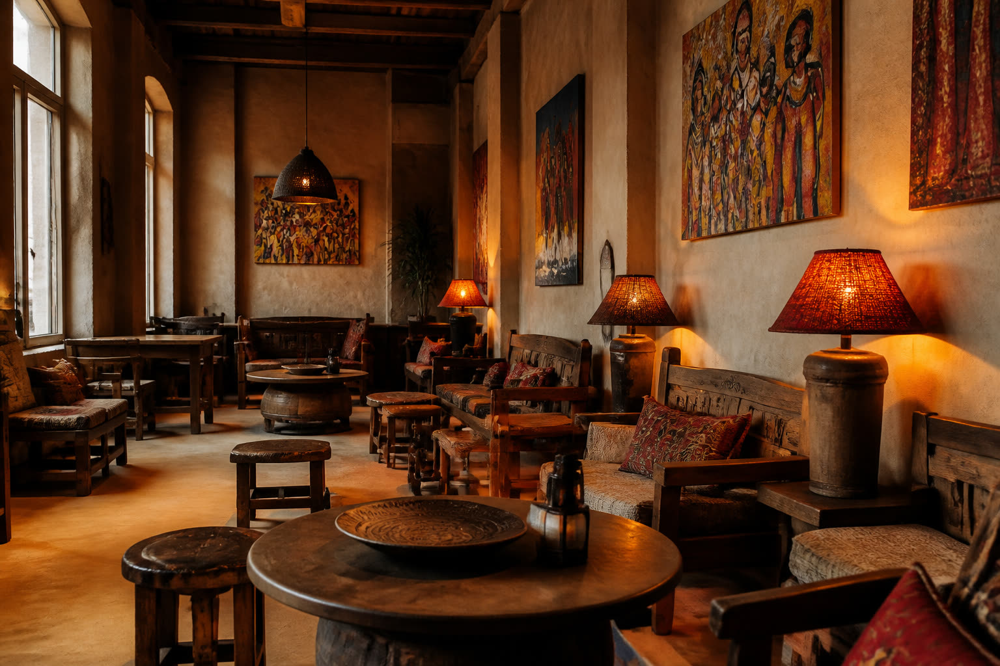

Eritrees & Ethiopisch · Amsterdam-Noord
Semai
Semai betekent hemel in het Tigrinya en het Amhaars.
Een uniek Oost-Afrikaans restaurant in Amsterdam: familierestaurant en lounge op de eerste verdieping van een voormalig industriepand aan de Papaverhoek. Eten is delen: injera met stoofgerechten.
Maandag gesloten · dinsdag–zondag 17:00–22:00
Papaverhoek · eerste verdieping
Hemel, één trap omhoog
Semai noemt zichzelf «a unique East-African restaurant in Amsterdam». De naam betekent letterlijk lucht / hemel in het Tigrinya (Eritrea) en het Amhaars (Ethiopië).
Het is een familierestaurant en lounge op de eerste verdieping van een voormalig industriepand in Amsterdam-Noord. Van buiten een sobere, donkere poort; binnen een warme, Oost-Afrikaanse huiskamer-lounge — geen nachtclub.
NRC schreef: «eenmaal op de eerste verdieping waan je je in een andere wereld.» Reserveren vooraf is verstandig.

Gasten & pers
“Semai gives you authentic East African cuisine that will make you question whether or not you to a flight unknowingly to East Africa! … the owners truly make you feel like you’re a part of the family”
“Feben and Kahsay followed us and shared their full knowledge about their culture, food and their enthusiasm was very contagious!”
“Perfect place for gluten free food!! We really had a great time, food was delicious and we loved the experience & atmosphere.”
Gastclaim, geen certificering en niet vermeld op de officiële menukaart.
“Goed, simpel, authentiek eten: echt een plek om terug te komen. … eenmaal op de eerste verdieping waan je je in een andere wereld.”
Locatie & openingstijden
Semai Restaurant & Lounge
Papaverhoek 35
1032 JZ Amsterdam
Amsterdam-Noord, bij Noorderpark. Eerste verdieping.
Bereikbaar via de trap (eerste verdieping). Bronnen vermelden dat de zaak niet rolstoeltoegankelijk is — geen toegankelijkheidskeurmerk op deze demo.
| Maandag | Gesloten |
|---|---|
| Dinsdag | 17:00–22:00 |
| Woensdag | 17:00–22:00 |
| Donderdag | 17:00–22:00 |
| Vrijdag | 17:00–22:00 |
| Zaterdag | 17:00–22:00 |
| Zondag | 17:00–22:00 |
Bron: contactpagina restaurant (WordPress). semairestaurant.wordpress.com/contact/
Volg hen:
Reserveren
Reserveren vooraf wordt aangeraden. Bel of mail — er is geen TheFork-pagina bevestigd.
-
Telefoon
020 786 6625 -
E-mail
restaurant.semai@gmail.com
Veelgestelde vragen
Moet ik reserveren?
Ja, dat wordt aangeraden. Telefonisch (020 786 6625) of per e-mail (restaurant.semai@gmail.com). Een TheFork-pagina is niet bevestigd.
Zijn er vegetarische of vegan opties?
Ja. De officiële menukaart heeft een sectie «VEGETARIAN & VEGAN DISHES» (onder andere Shiro, Tumtumo, Tsebhi Duba, Hamli, Alicha, Kikie en de mix Yetsom Beyaynetu €22,50).
Is de injera glutenvrij?
Niet geverifieerd op de officiële menukaart. Vraag het bij het reserveren; behandel glutenvrije injera niet als een belofte totdat het restaurant het bevestigt.
Welke dagen zijn jullie open?
Eerste partij (WordPress-contactpagina): dinsdag–zondag 17:00–22:00, maandag gesloten. AmsterdamNOW (zeven dagen / tot 03:00) is onbetrouwbaar en wordt hier niet als openingstijd gebruikt.
Is het restaurant rolstoeltoegankelijk?
Het zit op de eerste verdieping, bereikbaar via de trap. Bronnen vermelden dat de zaak niet rolstoeltoegankelijk is.